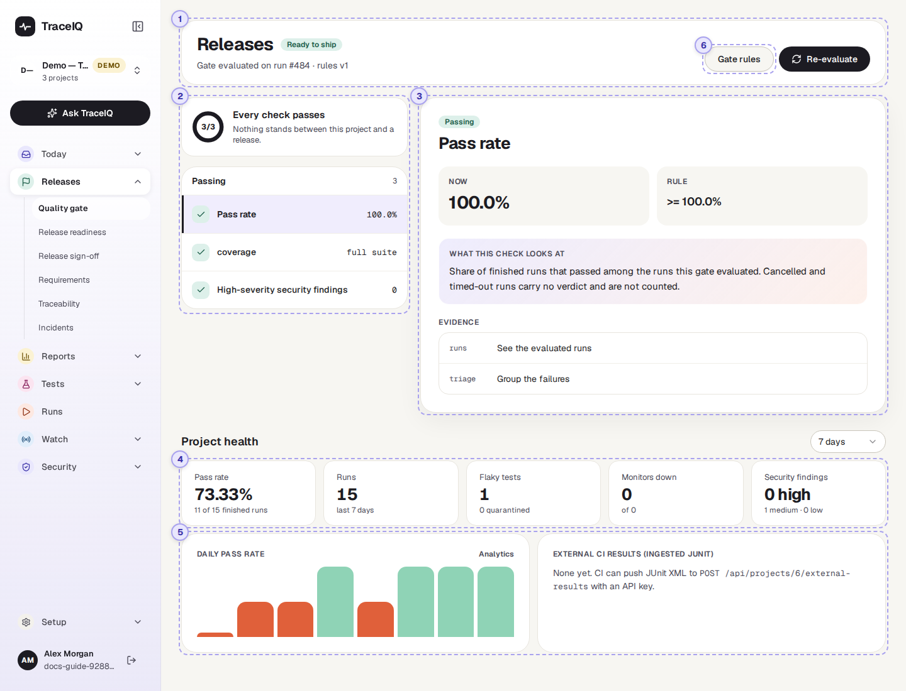
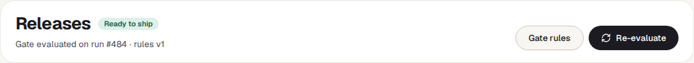
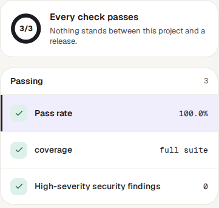
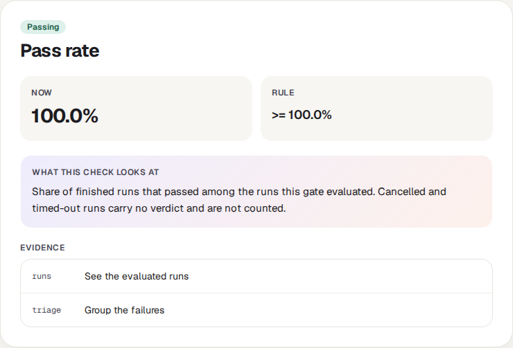
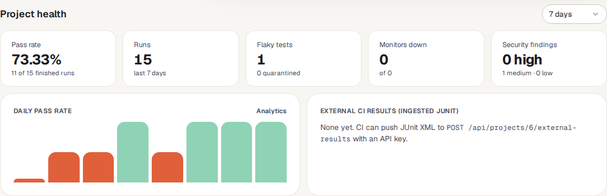
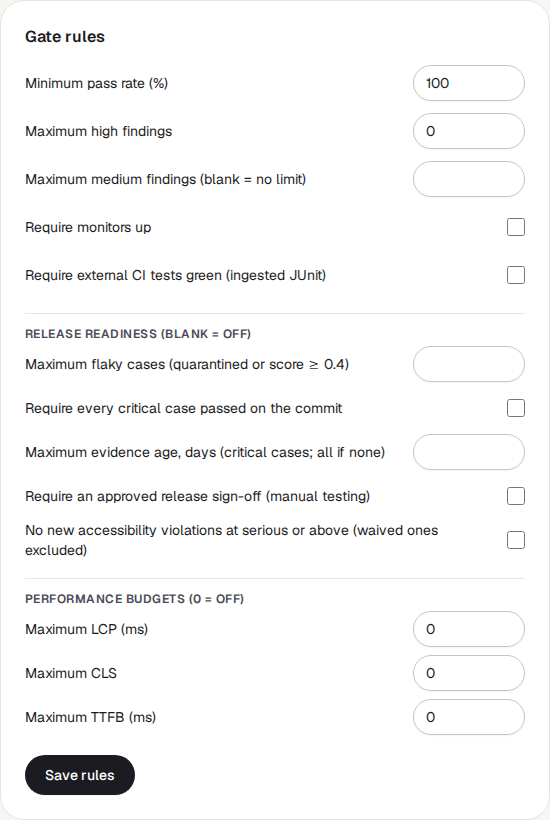
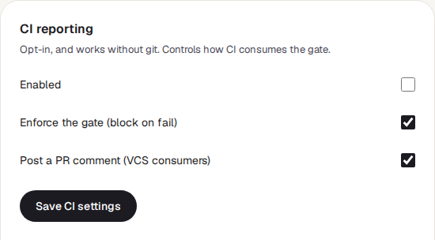
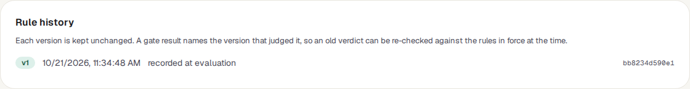

Quality gate
A short list of rules a release has to meet, such as "every test passed" and "no serious security problem". The page checks the newest run against those rules and says Ready to ship or Not ready, with the reason for each rule.
What it is for
The quality gate answers "Can we release this, by the rules we agreed?" Instead of everyone judging the test results in their own way, the team writes the rules down once (for example: a 100% pass rate, no high-severity security finding, all monitors up), and TraceIQ applies them the same way every time. The same verdict can also stop an automatic build from going out, when your build system asks TraceIQ.
Release managers
See in one word whether the project meets the release rules, and which rule is in the way.
Testers and developers
Find out which check is blocking and jump to the runs, failures or findings behind it.
Leads
Decide the rules for the project, and see when they were changed.
Where to find it: in the sidebar, open Releases → Quality gate. The page's own heading says Releases. It shows the project selected at the top of the sidebar.
A tour of the screen
The verdict and its checks are at the top; the project's general health is underneath; the rules open from a button in the heading. The numbers on the screenshot match the sections below.

The verdict

- The label next to the heading is the verdict: Ready to ship when every check passes, or Not ready · 2 blockers with the number of checks that fail.
- The line underneath says what was judged: the run number (for example run #484), its branch and commit if the run recorded them, and the version of the rules used (rules v1). If runs were left out because they were cancelled or timed out, it says how many.
- Gate rules (⑥) opens the rules below the heading (see Gate rules). Press it again to close them.
- Re-evaluate checks the gate again, for example after a new run has finished.
On this page, the gate looks only at the most recent run that finished in the project (passed, failed or error), whichever suite it was. So the pass-rate check is either 100% or 0% here. To judge everything that ran on one version of your app (one commit), use Release readiness, or let your build system ask the gate for a commit or a branch: then every finished run on it is counted.
The checks

The ring counts the checks that pass out of all checks. Below it, the checks are split into Blocking (failing, shown first) and Passing. Each row shows the check's name and, on the right, the value it found. Click a row to show it in detail on the right.
Which checks appear depends on the rules. Three are always there:
| Check | What it looks at |
|---|---|
| Pass rate | The share of the judged runs that passed. Runs that were cancelled or timed out have no pass/fail answer and are left out. With no finished run at all, this check fails. |
| coverage | For information only, it never blocks. full suite means the whole suite ran; targeted — 4 of 30 cases ran means only some tests ran, so a pass says less. |
| High-severity security findings | Security problems of high severity found in the judged runs by the checks TraceIQ makes on every run's traffic. The rule says how many are allowed (0 by default). |
Others appear only when a rule switches them on: medium-severity findings, monitors up, external CI tests, the three performance budgets, and the release-readiness checks (flaky tests, critical tests, how fresh the results are, sign-off, accessibility). The newer checks show their technical name, for example flaky cases or critical passed.
The selected check

- Passing / Blocking: whether this check meets its rule.
- Now is the value found; Rule is what it must be
(
>=means "at least",<=means "at most"). - What this check looks at explains the check in a sentence. Extra detail from the check appears in brackets, such as the names of the monitors that are down or of the tests that failed.
- Evidence links to the pages where you can look further: Runs, Failure triage, Security or Monitors. The Runs link opens the full list of runs, not only the judged one.
When the page opens, the first blocking check is shown; if nothing blocks, the first passing one.
Project health

The wider picture, separate from the verdict. The menu on the right chooses the period: the last 7, 14 or 30 days.
| Tile | What the number means |
|---|---|
| Pass rate | Of the runs in the period that finished with a verdict (passed, failed or error), the share that passed. |
| Runs | Every run started in the period, including ones still running, cancelled or timed out. |
| Flaky tests | Tests that currently pass and fail without anything changing (a flake score of 0.4 or more). This number is not limited to the period. Underneath: how many are quarantined, that is, left out of runs for the time being. |
| Monitors down | The project's monitors that are down right now, out of all its monitors. |
| Security findings | Security findings recorded in the period, by severity, whatever their status (fixed ones included). |
Daily pass rate and CI results
Daily pass rate has one bar for each day in the period on which at least one run finished; days without runs are simply left out. Days are counted in UTC. Point at a bar to see its date, pass rate and number of runs. The colours are the same as on Overview:
| Bar colour | Meaning |
|---|---|
| Green | 90% or more of that day's runs passed. |
| Yellow | Between 60% and 89% passed. |
| Orange | Less than 60% passed. A day where nothing passed still shows a thin orange stub. |
External CI results lists the five newest test reports your own build system has sent to TraceIQ (JUnit reports from tests that run outside TraceIQ), each with its number of tests and failures. Until one arrives it says "None yet". These reports count towards the verdict only when the rule Require external CI tests green is on.
Gate rules
Press Gate rules in the heading to open the rules. Anyone can read them; only editors can save changes.

| Rule | What it does (default) |
|---|---|
| Minimum pass rate (%) | The pass rate the judged runs must reach (100). |
| Maximum high findings / medium findings | How many high or medium security findings the judged runs may have (0 high; medium not checked while blank). |
| Require monitors up | Blocks while any of the project's monitors is down (off). |
| Require external CI tests green | The newest report from your build system (for the commit being judged, if there is one) must have no failures. With no report at all, it blocks (off). |
| Release readiness section | Limits on flaky tests, "every critical test passed", how old the newest passing result may be, an approved sign-off, and no new serious accessibility problems. All off until filled in or ticked; Release readiness and Release sign-off explain them. |
| Performance budgets | The slowest page-load figure measured in the judged runs (LCP, CLS, TTFB) must stay under the limit. 0 = not checked. If no run measured it, the check passes with "no samples". |
Next to the rules is CI reporting, which tells TraceIQ's GitHub Action how to use the gate:

- Enabled and Enforce the gate: a failing gate stops the build only when both are ticked. Enabled is off by default, so out of the box a failing gate is reported but doesn't stop anything.
- Post a PR comment: whether the GitHub Action may write its summary as a comment on the pull request.
Below that is Rule history:

Every set of rules that has ever judged the project is kept unchanged, numbered v1, v2 and so on (the 10 newest are listed). saved by a person means someone changed the rules; recorded at evaluation means TraceIQ stored the rules in force when it first used them. Because each verdict names its version, an old verdict can be explained later with the rules of that day.
The panel also holds two project settings that are explained under Project settings: Data capture and redaction (what runs may record) and the project's OpenAPI spec.
Watch it in use
How to…
…find out why the project is not ready
- Make sure the right project is selected at the top of the sidebar.
- Look at the Blocking list. The first blocking check is already shown on the right.
- Compare Now with Rule, and read the detail in brackets.
- Follow a link under Evidence to the runs, failures or findings behind it.
…change what a release must pass
- Press Gate rules. (You need the editor role to save.)
- Change the numbers or tick the boxes. Leave a box blank, or a budget at 0, to switch that rule off.
- Press Save rules. The verdict is worked out again straight away, and the change is kept as a new version in Rule history.
…make a failing gate stop your build
- Press Gate rules and find CI reporting.
- Tick Enabled and Enforce the gate, then press Save CI settings.
- Your build must use TraceIQ's GitHub Action (or call the gate itself). Ask whoever looks after your builds.
Good to know
- No runs, no release. If the project has no finished run, the gate is Not ready: TraceIQ can't vouch for something that wasn't tested.
- Only the security checks on the runs count. The security rules count findings that TraceIQ's automatic checks found in the judged runs, whatever their status. Findings from separate security scans (on the Security pages) are not part of this count.
- Cancelled and timed-out runs are ignored, and so are the check runs TraceIQ makes to test a suggested fix (see Proposals).
- It doesn't update by itself. Press Re-evaluate, or come back to the browser tab, to see newer results. Changing the period refreshes the health section.
- Rule changes are recorded. Besides the Rule history, every change of the rules is written to the audit log with who changed what, from which value to which.
- One project at a time. Each project has its own rules. Switch project at the top of the sidebar.
Related pages
Release readiness
The next page in this guide: the same gate for one version (commit) of your app, with the tests, flaky tests and requirements behind it.
Release sign-off
A person's approval of a release, which the gate can require.
Failure triage
Failures grouped by cause, when the pass-rate check is blocking.
Scans & findings
Every security finding of the project, with its status and owner.